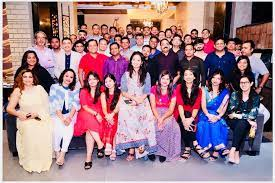

BISHOP WESTCOTT GIRLS' SCHOOL
Bishop Westcott Girls' School Namkom
Welcome to BWGS
Why Westcott?
Our Founder
bishop foss westcott
Bishop Westcott Girls’ School was founded by Rt. Revd.(Dr.) Foss Westcott in 1921. Formerly an Anglican School, it now belongs to Chotanagpur Diocese (Church of North India). It provides education through the medium of English for over 2000 children, of all communities as boarders and day scholars. The Chairman of the Governing Body is the Bishop of Chotanagpur Diocese, Church of North India. The school belongs to the conference of Anglo-Indian Schools and was recognized by the then Govt. of Bihar. It is subject to inspection by the inspector of Anglo-Indian Schools in Jharkhand.
The School is situated seven kilometres from Ranchi on the healthy Chotanagpur Plateau at an altit
ude of 2,000 ft. The school buildings and the playground are spacious. The aim of the school is to
give sound education in order to develop the whole personality providing best opportunity for mental,
physical, overall growth and moral development in each child. Children are encouraged to become
responsible and self reliant and are taught to consider the needs of one another both in school
and in the larger communities to which they belong. The main goal of our institution is to
inculcate in a child, the respect for all in society, towards religion and other communities,
this, thus develops in a child the basis of life, trust in God, and a sense of responsibility
to all mankind. A high standard of behavior is maintained and children are taught to give due
respect to their elders and to appreciate and regard the opinion of others. Thus discipline plays
a vital role in our institution.
Rt. Revd. (Dr.) Foss Westcott,
Founder,
Bishop Westcott Girls School, Namkom.
Our Principal's Desk
miss. n . jacobs
Songs of praise and thanksgiving to God our Father for having endowed His creation Bishop Foss Westcott with the vision of education in the midst of wilderness. The sapling sown years back in 1921, in Namkom has now grown into a majestic tree of knowledge, spreading its branches out to provide education to the girl child and the fruit of which, is enjoyed by society at large
Being the head of the institution, I always look forward, to our motto “Onward and Upward” and march ahead and add numerous illustrious feathers, to the cap of Bishop Westcott Girls’ School, Namkom. In the end, I would like to extend my gratitude towards the Standing Council and Management, for their steadfast approach, vision and constant support in helping and believing in me, in every way, to take this school to great heights.
Achievements
School Topper 2021-22
School Toppers of Bishop Westcott Girls' School - 2021-22
Zonals' Competitions
Bishop Westcott has always done well in the Zonals' and other regional competitions.
School Parlour
Dance practice
Bishop Westcott Girls' School Namkom
Academics
Faculty
school refectory
Boarding facility is provided from classes K.G. – X, with spacious dormitories. Well equipped health unit manned by nurses and doctors. Bus facility for day scholars ensuring safety and protection.There are 5 sections A B C D and E for every class taking from 1 to 10. Bishop Westcott provides you with well educated and mannered teachers who teach well as well as guide well. Our school not only pays attention in teaching children bookish but also give moral to our children. There are total 4 well-developed blocks in this school with proper class rooms and washrooms. Every class room is provided with smart board helping our children to learn better. There are well-sanitized toilets for our girls , very convenient for them in every point. What our teachers teach is what our students learn ,so we assure you that the seed sowed here will be taken care and will grow into a ripened sweet fruit.
Sports
sports
Sports & Co-Curricular Activities
A healthy mind and a healthy body is reminded every year through the Annual Athletic Meet, yoga, karate, ASISC Zonal & Regional Tournaments held every year. Co-curricular activities like music, art, dance, debate and various other competitions, help to develop the civic social and disciplinary values.
Laboratory
labs
For imparting practical knowledge in Physics, Chemistry and Biology, Bishop Westcott Girls School has 3 well-equipped laboratories. Students are encouraged to learn through experiences and this helps to remember the concepts better and ensures that students are better prepared for theoretical examinations. The respective subject teacher guides the students to explore experiments in practical classes. All the labs are well equipped with necessary materials and completely safety compliant.
Bishop Westcott Girls' School Namkom
Infrastructure
Modern classrooms
classrooms
Well lit, airy classrooms with Public Address System in all 42 classrooms and accessibility of CCTV. Application of well equipped teaching aids and educational learning through Smart Classes.
Library
library
The School has well equipped air-conditioned and computerized libraries, with Books. The library also provides students and teachers with a range of reference books, encyclopedia, journals and newspapers and internet facilities to enrich their classroom activities and knowledge. The Learning Centre with its enlarged Library and separate Reading Rooms has a Resource. All new books are arranged on a display table in the library for a month and reviews put up on the Notice Board. Our specially trained Librarian organizes the Library Week with book readings, designing book jackets & book marks and writing book reviews.
Admission
-
Online Registration

At the time of submitting the Registration form the parents will be given a date of interview.
All PDC installments have to be handed over at the time of final admission.
No fee will be refunded for any reason whatsoever once deposited. The only amount that will be refunded at any given point of time is the security deposit.
Parents can avail a reduction of 5% on the annual fee by paying the full year fee as one time single payment.
Tuck shop, transport, courier, telephone etc. are not included in the admission fee.
There would be a fine of Rs. 1000/- if the PDC bounces.
Foreign nationals intending to study in Bishop Westcott School will have to travel to India on a student VISA issued by an Indian Foreign Office located in their country.
Admission under the R.T.E Act, 2009
HOSTEL
-
Hostel

HOSTEL
The right atmosphere in a boarding institution makes a child grow up with a sense of responsibility and self-discipline, respect for different customs, rituals and cultures.
The Boarding Houses at Sapphire have been specifically designed to provide a warm and caring family-like environment. There are separate hostels for boys and girls. All the rooms are air-conditioned accommodating 3 - 5 students with all amenities and attached washrooms.
Each hostel is divided into 'Wings' also known a ‘Dorms’, monitored by the Wing Parent. Besides the Wing Parents, the Hostel Warden and the Supervisor are responsible for maintaining the sanitation and hygiene.
Each wing has a spacious common area where students can socialize, relax, enjoy and watch television with fellow pupils, or play indoor games like table-tennis, carrom or board games.
Bishop Westcott Girls' School Namkom
News and Media
Alumni

As a Westcottian alum you are an automatic member of the BWGSN Old Students Association. 5000+ members spread all over the world having various proffessions, have a lasting connection to Bishop Westcott Girls’ School, Namkom and we want to help make it stronger. Each year, alumni participate in Wescottian life through alumni events, reunions, networking, and contributing financial support. We hope you will choose to participate in our community. You can attend alumni events, meet up with alumni in your area using our mobile app, or share your story in the Quadrangle. Your Westcottian family provides a lifetime of opportunity to engage with the school, connect with your classmates, and network with alumni you haven’t even met yet.
Bishop Westcott Girls' School Namkom
Contact Us
.jpeg)